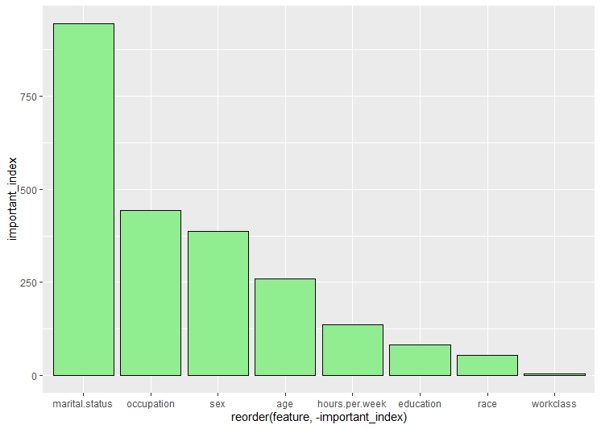
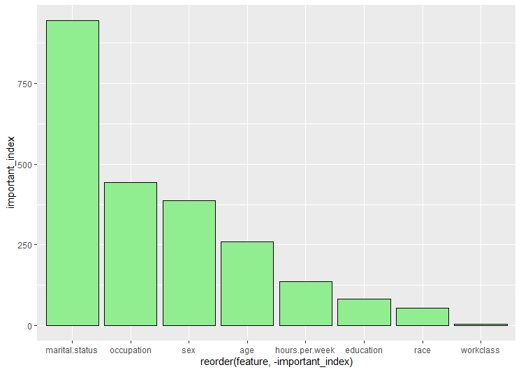

Decision Trees
What are Decision Trees
Decision Trees (DTs) are a supervised learning technique that predict values of responses by learning decision rules derived from features. They can be used in both a regression and a classification context. For this project, decision trees are used in the classification context. Decision tree learning is a method commonly used in data mining. The goal is to create a model that predicts the value of a target variable based on several input variables.
Decision Trees in R
The decision trees are created using record dataset in R. The dataset has been downloaded from UCI Machine learning repository. The link for the source can be found here This dataset consists of various features like age, workclass, education, marital status, relationship, race, sex, hours per week. The label column contains the data of whether the person is rich (salary greater than or equal to 50k) or poor(salary less than $50k).
Cleaning and formatting the dataset to the required format
The code to create clean and format the datasets can be found here
There are a lot of unwated columns in the dataframe. These columns are dropped from the dataframe, retaining only the necessary columns. The dataset is checked for NA values, and all the NA values are removed. Checking the balance of the dataset and label is very important before performing decision trees, as unbalanced dataset may lead to over or underfitting. The age and the hours per week are binned into categories for easier classification.
Model Building
The code to build the model can be found here
Before building the model, the dataset is split into training and testing sets. The split ratio is 0.75 of the total data in the training set and 0.25 data in the testing set. Four different decision trees are created. The Decision Trees differ due to hypertuning of different parameters. Mainly the Complexity Parameter is tuned.
Decision Tree 1
This is the default decision tree. In this tree, the root node is marital status. The second split is on the basis of occupation and the third split is on education. According to the graph of top features, the top most feature is marital status
Decision Tree 2
This is the second decision tree. In this tree, the root node is marital status. The second split is on the basis of occupation and the third split is on education and age and so on.The cp in this tree is considered to be 0.005. According to the graph of top features, the top most feature is marital status
 

Decision Tree 3
This is the third decision tree. In this tree, the root node is marital status. The second split is on the basis of occupation and the third split is on education and so on.The cp in this tree is considered to be 0.01. According to the graph of top features, the top most feature is marital status.
Decision Tree 4
This is the fourth decision tree. In this tree, only the age, hours per week and education features are used. The root node is age. The second split is on the basis of education and the third split is on hours per week and so on.The cp in this tree is considered to be 0. According to the graph of top features, the top most feature is age.
Random Forest
The code to create random forest can be found here
Random forests or random decision forests are an ensemble learning method for classification, regression and other tasks that operates by constructing a multitude of decision trees at training time. For classification tasks, the output of the random forest is the class selected by most trees. For regression tasks, the mean or average prediction of the individual trees is returned.Random decision forests correct for decision trees' habit of overfitting to their training sets. In this the classification is used.